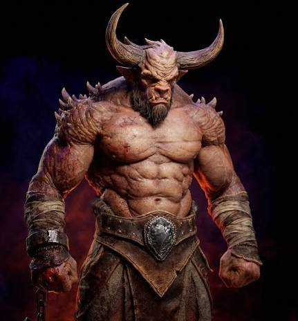

🐂 Кто такой Минотавр?
Минотавр — одно из самых известных существ древнегреческой мифологии. Его изображают как могучего человека с головой быка. По легендам он жил в огромном лабиринте, состоящем из множества запутанных коридоров. Найти выход из этого лабиринта было почти невозможно, поэтому истории о Минотавре стали символом загадок, силы и смелости.
✨ Внешний вид
- 🐂 Голова быка с большими рогами.
- 💪 Мощное тело человека.
- 🦵 Очень сильные ноги.
- 🦴 Крепкие мышцы.
- 👁️ Острый взгляд.
- 🛡️ Большая выносливость.
🌍 Где живёт?
По легенде Минотавр жил в огромном лабиринте, построенном специально для него. Лабиринт состоял из бесконечных комнат, лестниц и коридоров, поэтому выбраться из него было невероятно трудно.
⭐ Способности
- 💪 Огромная сила.
- 🏃 Очень быстро бегает.
- 🛡️ Высокая выносливость.
- 👂 Отличный слух.
- ⚔️ Хорошо сражается.
- 🧠 Отлично ориентируется в лабиринте.
📜 История
Самая известная легенда рассказывает о герое Тесее, который смог пройти лабиринт и победить Минотавра. По легенде ему помогла нить Ариадны, благодаря которой он смог найти обратную дорогу.
📖 Интересные факты
- 🏛️ Легенда появилась в Древней Греции.
- 🧶 Нить Ариадны стала символом поиска правильного пути.
- 🎮 Минотавр встречается во многих играх.
- 🎬 Его можно увидеть в фильмах и мультфильмах.
- 📚 Он считается одним из самых известных существ древнегреческой мифологии.
💡 Заключение
Минотавр остаётся одним из самых узнаваемых мифических существ. Его история напоминает о смелости, находчивости и умении находить выход даже из самых сложных ситуаций.